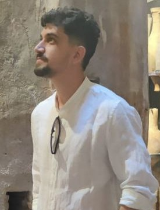

Harold Rosales Hernandez
Senior Backend Engineer
Computer scientist and committed software engineer with 7+ years focused on reliable, scalable backend systems. Strong experience with C#/.NET, cloud platforms (AWS & Azure), event-driven architectures and asynchronous processing. Passionate about test-driven development, clean architecture and mentoring teammates.
Experience
Backend Engineer | Tech Lead — AMV Solutions (Spain)
- Introduced asynchronous processing, reducing response times and improving concurrent workload handling.
- Led refactoring of legacy backend systems to improve maintainability and delivery speed.
- Moved parts of the system toward an event-driven approach, reducing coupling between components.
- Reduced CPU and DB load by removing unnecessary polling and optimising workflows (≈20–30% improvement).
- Migrated gRPC services to a code-first approach, simplifying development and maintenance.
Software Engineer — Blueberry Consultants (UK)
- Developed real-time features to improve responsiveness for end users.
- Built and maintained a notification system using AWS EventBridge, improving reliability.
- Helped stabilise backend systems, reducing incidents and improving reliability.
Software Engineer — Travel Services (Argentina)
- Reworked financial data workflows, reducing query times by ~50%.
- Built an integration framework to support multiple external providers and speed onboarding.
- Improved backend structure and data models for maintainability and extensibility.
Skills & Technologies
Education & Additional
Bachelor of Computer Science, University of Havana
3× ICPC Cuban Finalist
Languages: Spanish (Native), English (Professional)
Contact
If you'd like to get in touch, email me at haroldrosaleshernandez@gmail.com or use the phone number above.
Profile image: currently uses assets/profile.jpg. To use the image from your LinkedIn profile, please upload the image file here or paste a direct image URL (jpg/png) and I will add it to the site.